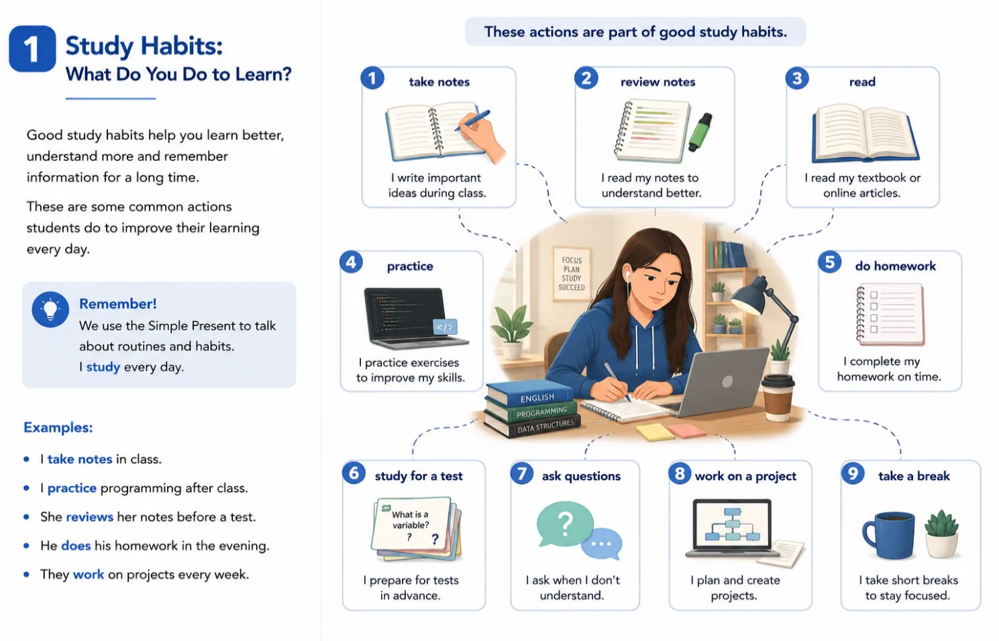
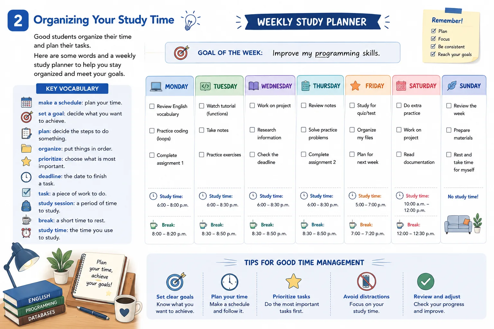
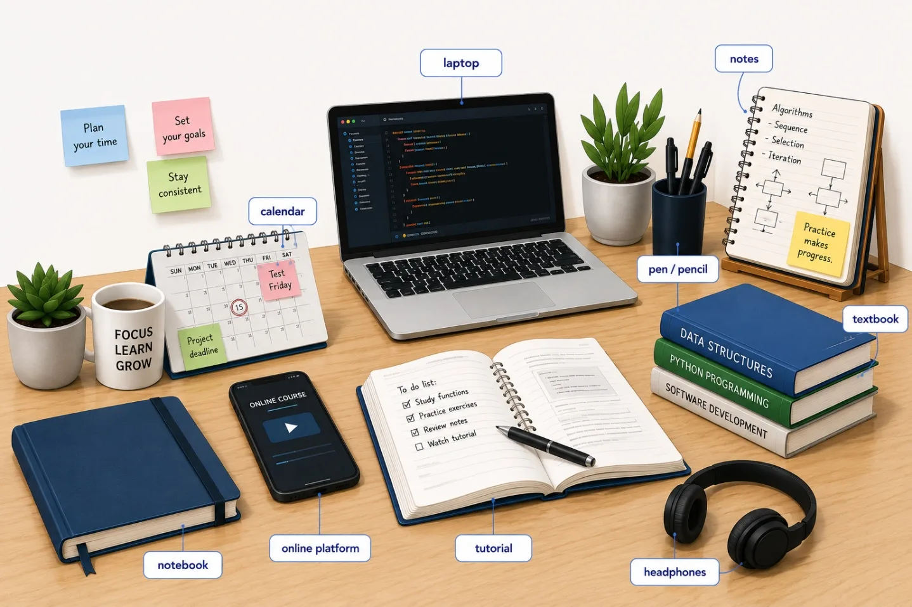
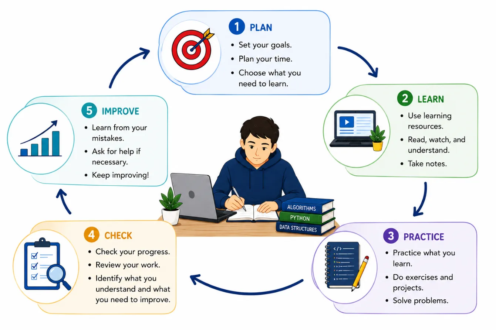
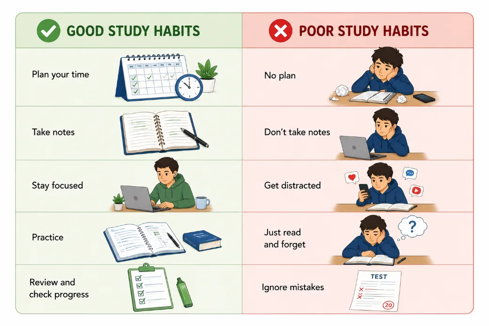
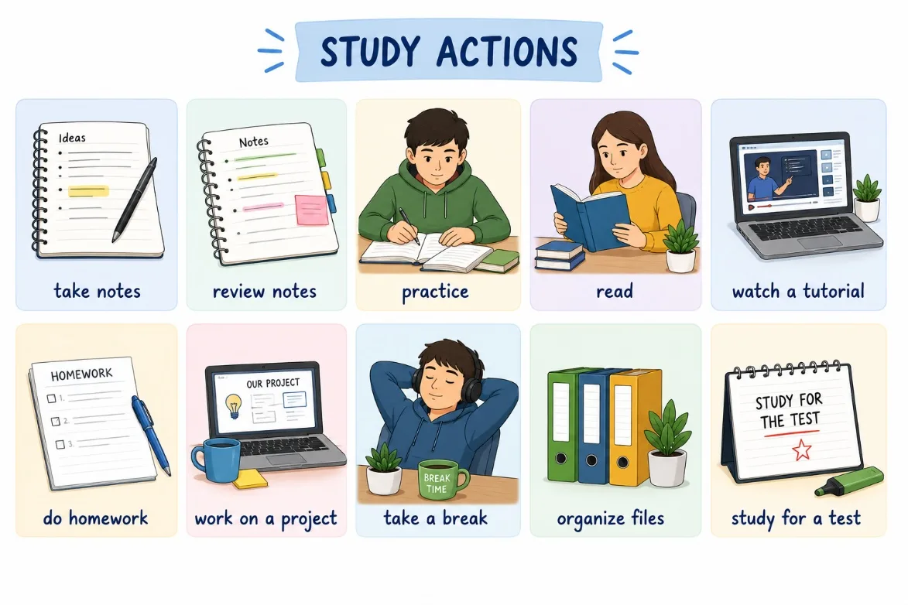
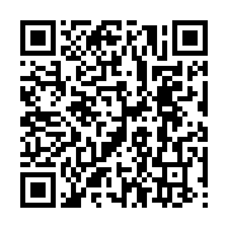
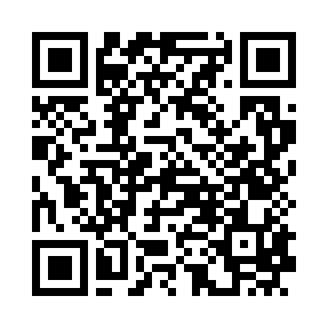
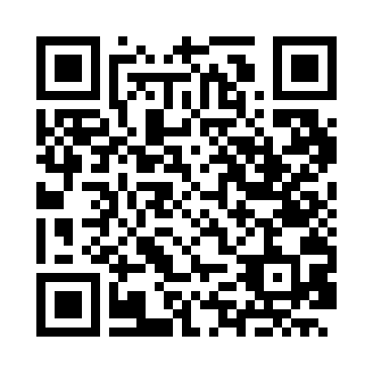
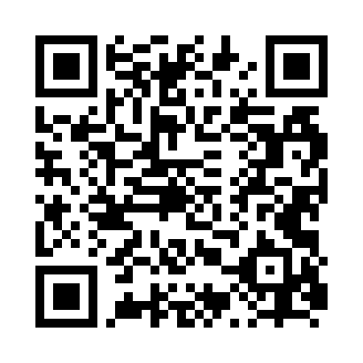

📚 What do YOU do to learn?
Aprender de manera efectiva no depende únicamente del tiempo que dedicamos al estudio, sino también de cómo organizamos nuestro tiempo, qué estrategias utilizamos y qué recursos elegimos para aprender. Tomar notas, establecer metas, practicar, consultar recursos digitales o revisar nuestro progreso son acciones que forman parte de la vida académica.
En esta guía aprenderás vocabulario y expresiones en inglés relacionados con los hábitos de estudio y el aprendizaje autónomo. A través de situaciones prácticas, recursos visuales y actividades contextualizadas, podrás identificar y describir cómo estudias, cómo organizas tu aprendizaje y qué estrategias puedes utilizar para aprender de manera más independiente, especialmente en el contexto de la tecnología y la programación.
✨ Small changes in the way you study can make a big difference in your learning. 🌱

Objetivos de aprendizaje
- 📚 Al finalizar esta guía, reconocerás y utilizarás vocabulario y expresiones relacionadas con los hábitos de estudio y el aprendizaje autónomo para describir tus estrategias, rutinas y recursos de aprendizaje en contextos académicos y relacionados con la tecnología y la programación.
🔍 Modo exploración: recorre las 5 estaciones y suma puntos
⭐ Puntos: 0
Actividades
🎮 Modo misión activado — completa las 3 misiones
🏅 Misiones: 0/3
📖 Handy references




📅 Misión 1

Look at the study actions above. Choose the activities that are part of your study routine and organize them in the table. You do not need to use all the options.
| ☀️ Before Studying | 📖 While Studying | 🌙 After Studying |
|---|---|---|
| organize files (example) | take notes (example) | review notes (example) |
🎯 Misión 2: My Learning Challenge
Choose something you want to learn or improve. It can be related to English, programming, another subject, or a personal learning goal. Then, complete your learning challenge.
⭐ Misión 3: My Study Habits Profile
Think about the way you study. Read each statement and choose the option that best describes you. There are no right or wrong answers.
| My study habits | Always | Usually | Sometimes | Never |
|---|
Evaluación
Comprueba lo que has aprendido. Selecciona la respuesta correcta para cada pregunta.
Recursos para profundizar
Para ampliar tu conocimiento, te recomendamos explorar los siguientes recursos:
-
100 Essential Education Vocabulary Words (ESLinfo)
Lista de 100 palabras clave sobre educación y hábitos de estudio, organizadas en 10 categorías.
Ir al recurso
-
How to Study Effectively: 12 Secrets For Success (Oxford Learning)
Doce estrategias prácticas y comprobadas para estudiar de forma más eficiente.
Ir al recurso
-
Mastering Education Vocabulary (MyEnglishPages)
Guía completa de vocabulario sobre educación y habilidades de estudio para estudiantes de inglés.
Ir al recurso
-
ESL School Vocabulary (Excellent ESL 4U)
Vocabulario escolar en inglés, incluyendo homework, assignment y course work.
Ir al recurso
Bibliografía
https://www.teachingenglish.org.uk/professional-development/teachers/teaching-knowledge-database/c/autonomy
https://www.teachingenglish.org.uk/professional-development/teachers/knowing-subject/vocabulary-and-autonomy
https://tll.mit.edu/teaching-resources/how-people-learn/self-regulation/
https://ccrc.tc.columbia.edu/publications/self-directed-learning-skills-strategies-support.html